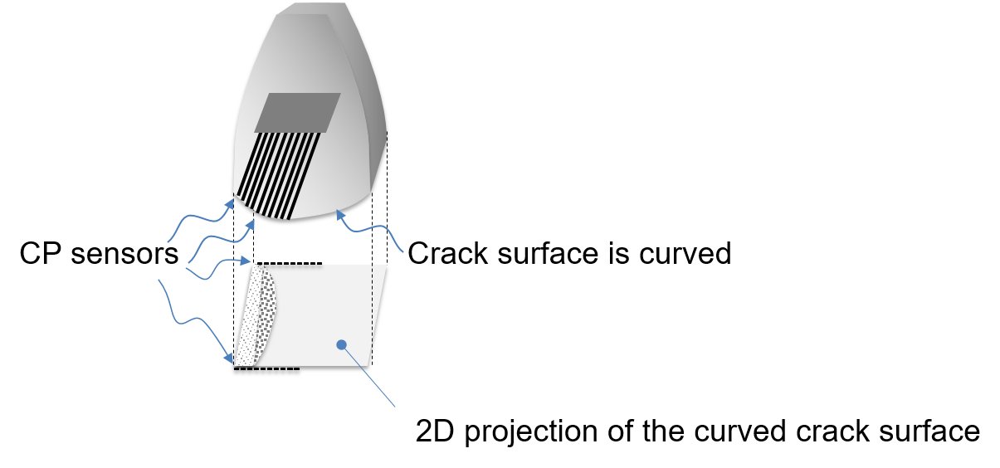
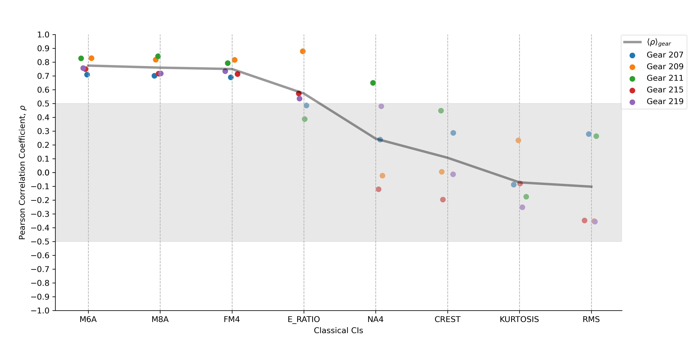
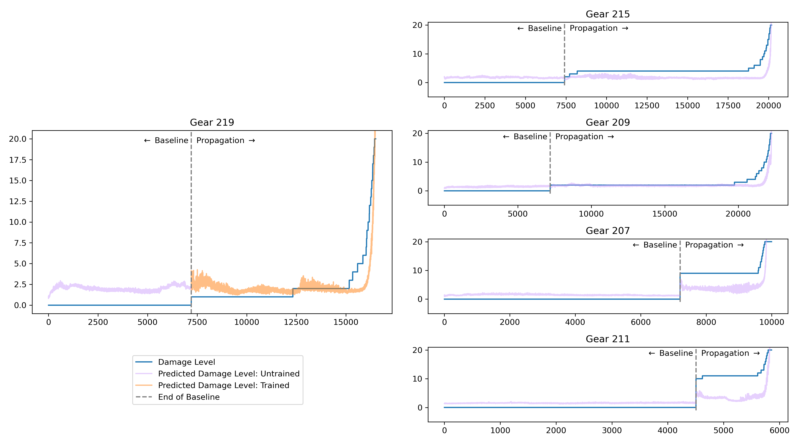
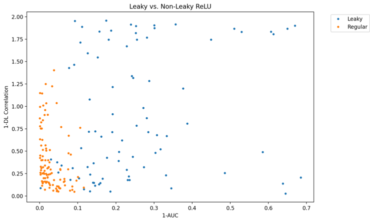

This exploration was my first project at Golisano Institute for Sustainability (GIS) and was the sole project that I worked on during my first co-op. The goal of this project is to use vibration data collected from gearboxes in helicopters to detect anomalies, assess damage, and even predict future damage state based on current vibration data. Failure tests were conducted by introducing tiny cracks and running the gear until the tooth breaks.
My first efforts were directed at going directly from time-sychronous average (TSA) vibration data to damage level. Both fully-connected and convolutional regression was attempted with little success. Next, autoencoders were investigated. Trained exclusively on healthy data, error on evaluation data was tested for correlation with damage level. This methodology was successful for anomaly detection but did not consistently track damage. The approach that ended up being most successful required using domain knowledge.
Within the mechanical health monitoring community, various heuristics have been created aimed at tracking specific forms of damage. These span in complexity from root mean squared error, a simple formula applied to each instance of the vibration data, to NA4*, which requires variance values collected from healthy runs. To compute these condition indicators (CIs), a simple Python implementation was created for each. I designed and implemented a Python library for combining all aspects of this process – from preparing data, to applying proper signal transforms, to computing condition indicator values. This project required careful consideration of software design principles – consideration which resulted in highly modular and easy-to-use software.
Using these condition indicators ended up being pivotal for the most successful effort we conducted. Several CIs performed well for tracking damage on different gear tests, but no one CI was successful for every test. A simple regression model was created, that used a combination of condition indicators that correlated highly with damage level, and was trained on several different gear tests. This model was successful at anomaly detection and tracked damage quite reasonably. Additionally, with sufficient numbers of samples viewed concurrently, this model was able to predict damage level up to five minutes in the future. This condition indicator toolbox and related modeling efforts have been submitted for publication.
As part of the autoencoder exploration, it was desired to find a better way to search through possible topologies and hyperparameters. A grid search is reasonable when only searching through a small number of hyperparameter permutations, but is too slow when the search space is larger. For this project, I learned about metaheuristic optimization and decided to implement a genetic algorithm to more intelligently explore the search space. Rather than exploring all parameter combinations, an initial population is seeded and trained. The best performers of this population are "bred" together and mutations are applied to prevent premature convergence. This new population is trained and this process continues until stopping criteria is met. This algorithm allows for the system to semi-intelligently converge on the best parameters without having to explore everything. Additionally, I learned how to train PyTorch models in parallel, further increasing the speed and efficiency of the exploration process. I also explored both single and multi-objective optimization. In the above figure, statistics for activation function are shown for one genetic algorithm pass. The algorithm eventually converged towards using primarily regular ReLu (rather than Leaky) as it performed much more consistently for this use case. This information allowed us to eliminate a potential permutation from future efforts.